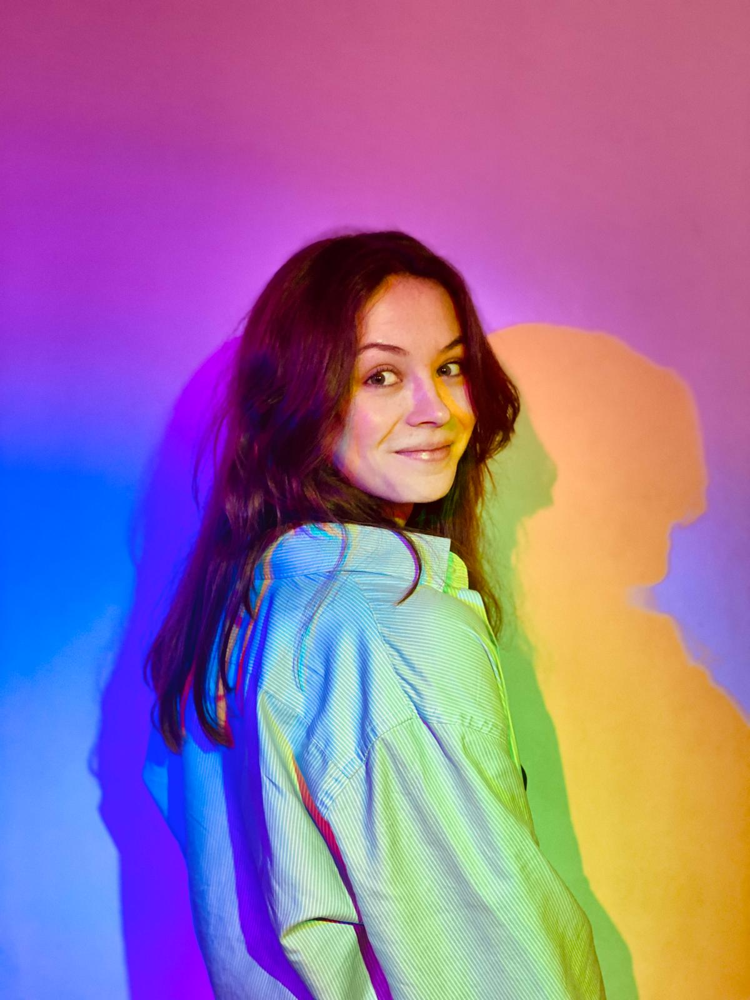

AI • Neuroimaging • Radiotherapy
I build uncertainty-aware clinical AI tools people can trust.
I'm an AI researcher focused on brain tumor segmentation and human-AI interaction in radiotherapy. My current work studies how uncertainty visualizations influence clinicians' decisions — aiming for safer and more practical deployment in real workflows.
Medical image segmentation
Uncertainty estimation
Human-AI interaction
Clinical decision support
